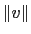
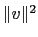
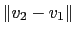

- veczero -
Returns the zero vector, {0 0 0}
Example:
vmd > veczero
0 0 0
- (C++) vecadd v1 v2 [v3 ... vn] -
Returns the vector sum of all the terms.
Examples:
vmd > vecadd {1 2 3} {4 5 6} {7 8 9} {-11 -11 -11}
1 4 7
vmd > vecadd {0.1 0.2 0.4 0.8} {1 1 2 3} {3 1 4 1}
4.1 2.2 6.4 4.8
vmd > vecadd 4 5
9
- vecmul v1 v2 -
Returns the vector of a term-by-term multiply.
Examples:
vmd > vecmul {1 2 3} {4 5 6}
4 10 18
vmd > vecmul {0.1 0.2 0.4 0.8} {1 1 2 3}
0.1 0.2 0.8 2.4
- (C++) vecsub v1 v2 -
Returns the vector subtraction of the second term from the first
Examples:
vmd > vecsub 6 3.2
2.8
vmd > vecsub {10 9.8 7} {0.1 0 -0.1}
9.9 9.8 7.1
vmd > vecsub {1 2 3 4 5} {6 7 8 9 10}
-5 -5 -5 -5 -5
- (C++) vecsum v -
Returns the sum of the elements in v
Examples:
vmd > vecsum { 1 2 3 }
6.0
- (C++) vecmean v -
Returns the mean of the elements in v
Examples:
vmd > vecmean { 1 2 3 }
2.0
- (C++) vecstddev v -
Returns the standard deviation of the elements in v
Examples:
vmd > vecstddev { 1 2 3 4 5 6 7 8 9 10 }
2.87228131294
- (C++) vecscale c v -
- (C++) vecscale v c -
Returns the vector of the scalar value c applied to each term of v
Examples:
vmd > vecscale .2 {1 2 3}
0.2 0.4 0.6
vmd > vecscale {-5 4 -3 2} -2
10 -8 6 -4
vmd > vecscale -2 3
-6
- vecdot v1 v2 -
Returns the scalar dot product of the two vectors
Examples:
vmd > vecdot {1 -2 3} {4 5 6}
12
vmd > vecdot {3 4} {3 4}
25
vmd > vecdot {1 2 3 4 5} {5 4 3 2 1}
35
vmd > vecdot 3 -2
-6
- veccross v1 v2 -
Returns the vector cross product of the two vectors.
Examples:
vmd > veccross {1 0 0} {0 1 0}
0 0 1
vmd > veccross {2 2 2} {-1 0 0}
0 -2 2
- veclength v -
Returns the scalar length of v (
)
Examples:
vmd> veclength 5
5.0
vmd > veclength {5 12}
13.0
vmd > veclength {3 4 12}
13.0
vmd > veclength {1 -2 3 -4}
5.47723
- veclength2 v -
Returns the square of the scalar length of v (
)
Examples:
vmd > veclength2 5
25
vmd > veclength2 {5 12}
169
vmd > veclength2 {3 4 12}
169
vmd > veclength2 {1 -2 3 -4}
30
- vecnorm v -
Returns the vector of length 1 directed along v
Examples:
vmd > vecnorm -10
-1.0
vmd > vecnorm {1 1 }
0.707109 0.707109
vmd > vecnorm {2 -3 1}
0.534522 -0.801783 0.267261
vmd > vecnorm {2 2 -2 2 -2 -2}
0.408248 0.408248 -0.408248 0.408248 -0.408248 -0.408248
- vecdist v1 v2 -
Returns the distance between the two vectors (

)
Examples:
vmd > vecdist -1.5 5.5
7.0
vmd > vecdist {0 0 0} {3 4 0}
5.0
vmd > vecdist {0 1 2 3 4 5 6} {-6 -5 -4 -3 -2 -1 0}
15.8745
- vecinvert v -
Returns the additive inverse of v (
 v).
v).
Examples:
vmd > vecinvert -11.1
11.1
vmd > vecinvert {3 -4 5}
-3 4 -5
vmd > vecinvert {0 -1 2 -3}
0 1 -2 3